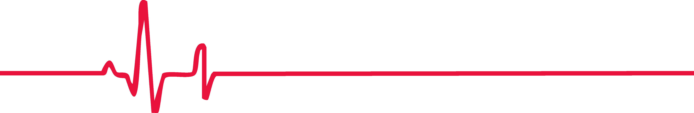
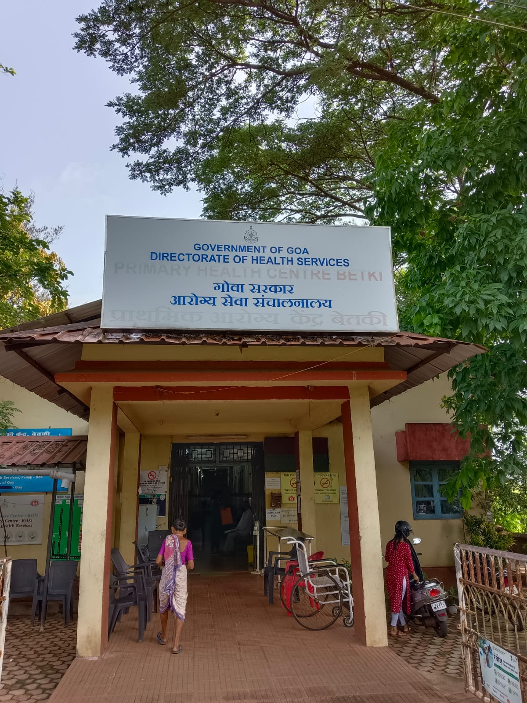
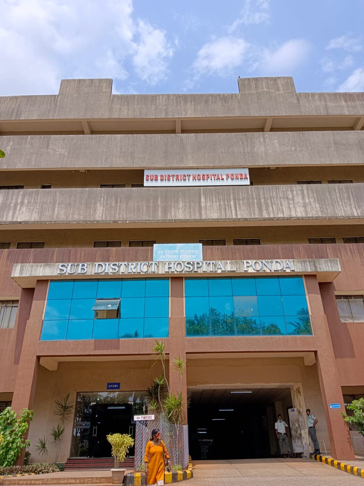
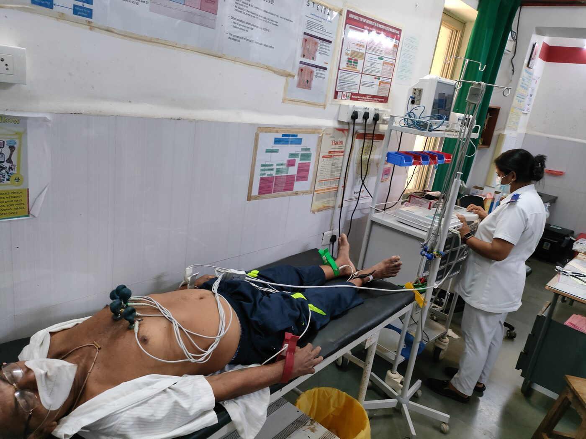
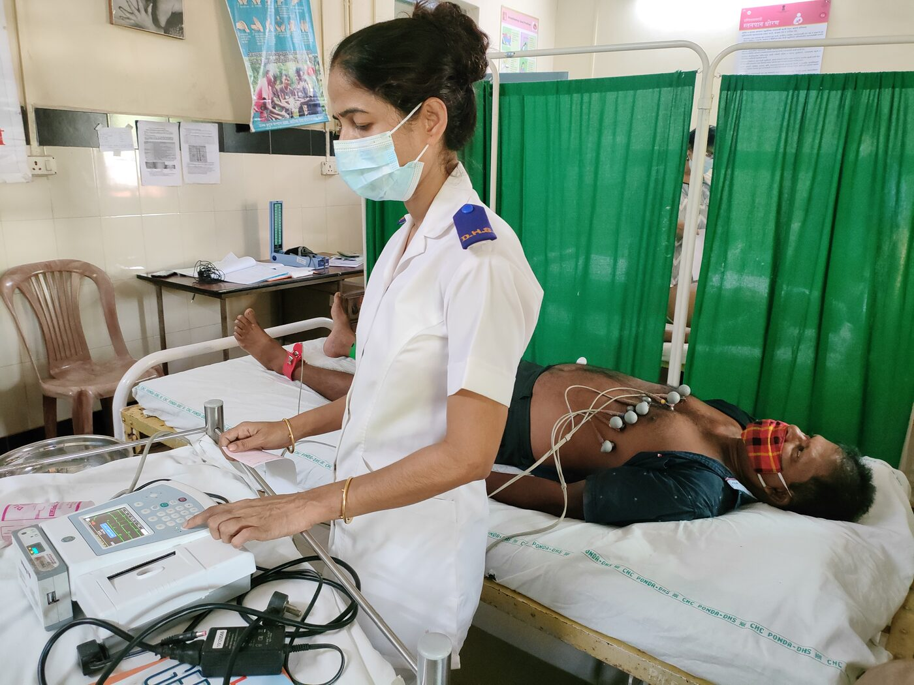
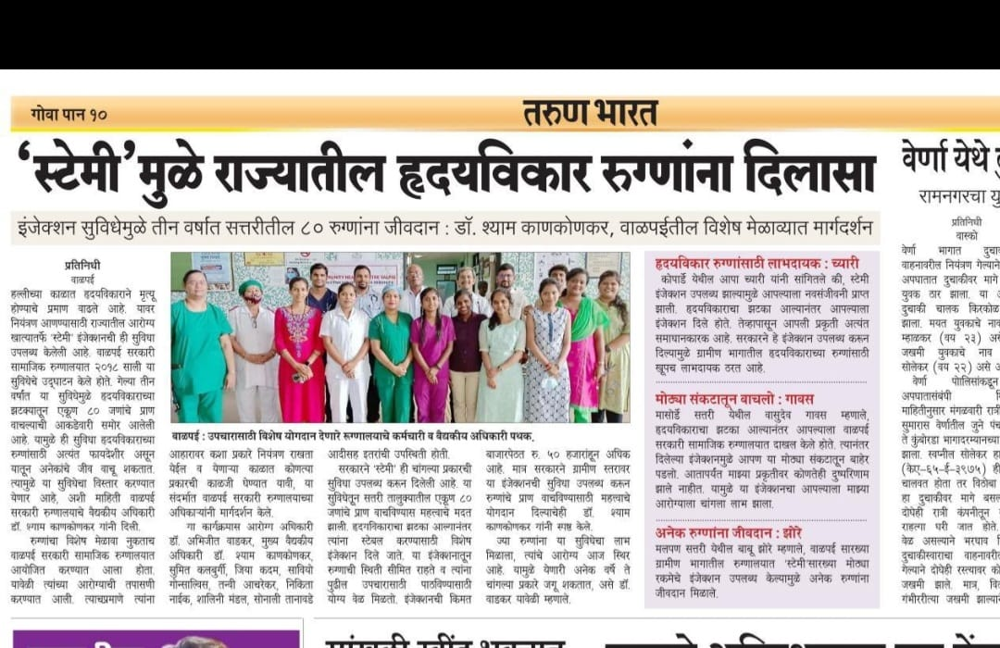
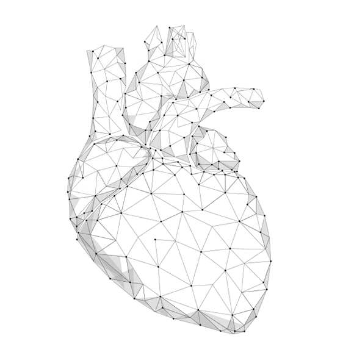

The inspiration behind the summit
Goa moved the expertise, not the patient.

Cardiovascular disease had become the state's leading cause of death — 37.4% of deaths at ages 40–69, 13.4% at 15–39. The missing resource was never the cardiologist. It was the time it took to reach one.
So Goa sent the ECG to the specialist instead.

“The goal was not to move patients faster.
It was to move expertise faster.”
2018: build the capability where the patient already arrives
Goa Medical College and the State NHM set out to build a STEMI model that delivered diagnosis and treatment closer to where patients first presented.
With Tricog Health, the state connected primary and community facilities to a central hub at Goa Medical College — a technology-enabled hub-and-spoke network.
A digital 12-lead ECG at the spoke goes to the cloud — read round the clock by Tricog's medical team with AI decision support.
A critical alert returns in under five minutes, so the clinician at the spoke can act without waiting on a referral.
Eligible STEMI patients are thrombolysed at the spoke — before transfer, not after it.


The network begins.
Primary and community facilities joined the hub.
Both districts covered, hub at Goa Medical College.
The technology was one part. The system around it was the rest.
Eight governance and capability elements held the network together — and none of them required new buildings.
Seven years on, the numbers tell one story
Every figure below follows from the same decision: read in the cloud, treat at the spoke, refer only when referral helps.
ECGs reported since 2018
Spoke facilities + state hub
of STEMI patients were thrombolysed
early STEMI mortality in 2025
Early mortality, 2019 → 2025
Among 724 STEMI patients.
A two-thirds fall in early mortality — with no new cath lab in any district.
Where the early deaths occurred
At spoke centres
During transit
At the hub hospitals
The model was not simply increasing access. It was changing outcomes.
The golden hour became a measurable pathway
Every step between arrival and treatment is timed, reported monthly to the Directorate of Health Services, and open to review.
Symptom to hospital arrival — still owned by public awareness
Inside the 10-minute international benchmark
A specialist-confirmed read at a facility with no cardiologist on site
Well within the 30-minute target — treatment begun before transfer

With 86.4% of STEMI patients thrombolysed, the network showed what happens when diagnosis, decision and treatment sit in the same room.
The same network became a window into the state's heart health
It began as a STEMI programme. It turned into a mechanism for finding critical cardiovascular conditions that would never have been detected at the primary level.
Of ~4.41 lakh ECGs reported
were abnormal
were critical — 33,590 patients
Inside the 33,590 critical ECGs
A programme built for emergencies ended up telling the state where prevention has to begin.
Where prevention needs to begin
The registry describes who Goa's heart-attack patients are: working-age, mostly male, and largely carrying two conditions primary care already knows how to treat.
had hypertension
had diabetes
were aged 40–79
men to women
presented in Killip Class I
Timely acute care saves lives — and the data that care generates shows where screening should start.
Most of these patients were reachable years earlier, at a blood-pressure check they never had.
Strengthening what already exists
Goa's experience shows that a stronger cardiovascular system does not have to begin with new infrastructure. Six ingredients, all of them already present in most states.
Existing facilities
Primary and community centres become the first point of advanced cardiac detection.
Technology
Connects those centres to specialist expertise, at any hour.
Data
Creates visibility across the system, district by district.
Training
Builds confidence to treat at the point of care.
Coordination
Turns individual facilities into one connected network.
Governance
Registry, monthly reporting and annual review keep it honest.

“Patients should not have to travel to expertise when expertise can reach the patient.”
The systems and learnings from Goa have since helped inform STEMI programmes beyond the state.
The question is no longer how Goa changed its STEMI pathway. It is what India can take from that journey.

Five questions the Summit exists to answer
How can states strengthen early detection?
How can primary and secondary facilities manage cardiac emergencies themselves?
How can technology shorten the distance between a patient and a specialist?
How can data move from a reporting requirement to a decision tool?
How can a state-level model be adapted for different health systems, geographies and populations?

Goa's greatest achievement may not be the numbers alone.
It is the proof that a state can build, test and scale a different way of delivering cardiovascular care — and then hand the method to the next state.
The National CVD Summit 2026, hosted by the Government of Goa with Tricog Health, brings policymakers, clinical leaders and public health experts together to take those learnings further: prevention and screening, acute cardiac care, heart failure, technology-enabled care, and scalable implementation.